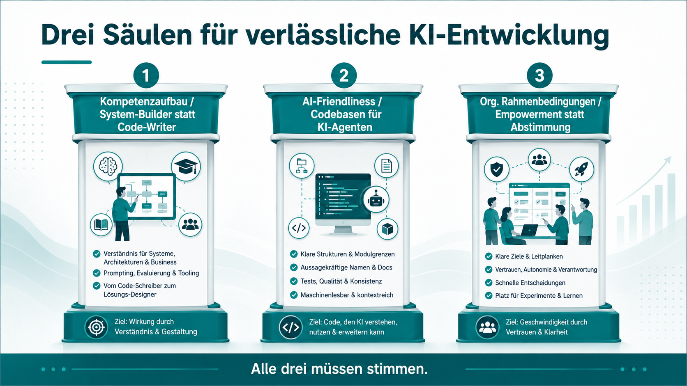
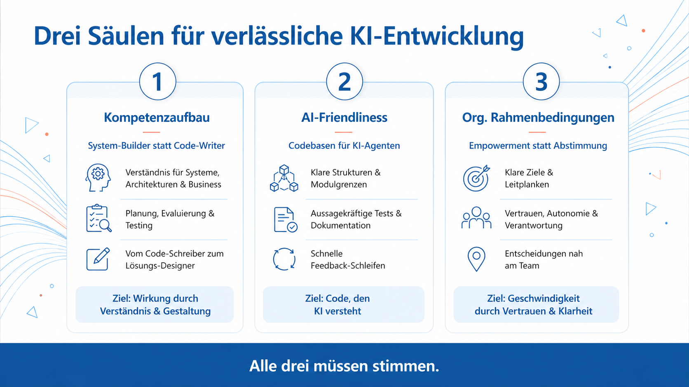

andrena objectsOBJECTS
Agentic Engineering — Praxisbeispiel
Vom generischen Bild
zur Marke.
Wie ein Agent Skill bestehende Inhalte automatisch im
Look & Feel der eigenen Marke neu erzeugt — recherchiert, gestaltet, fertig.
Beispiel: eine Folie aus dem Vortrag „Beyond Vibe Coding“.
Die Ausgangslage
Gute Inhalte, aber nicht im Marken-Look
Folien, Grafiken und Infografiken entstehen oft schnell — mit beliebigen Farben,
Schriften und Formen. Inhaltlich top, aber sie sehen nicht nach andrena aus.
Sie alle von Hand ins Corporate Design zu bringen kostet Zeit und Design-Know-how.
Genau hier hilft ein Agent Skill: eine einmal beschriebene, wiederverwendbare Arbeitsanweisung
für den KI-Agenten.
Im Folgenden: dieselbe Folie — vorher / nachher.
Vorher / Nachher — gleiche Inhalte
VORHER · generisch

Beliebige Farbwelt (Türkis), Standard-Stil — kein Bezug zur Marke.
NACHHER · andrena-Marke

andrena-Blau, Schrift, Bildmarke — gleicher Inhalt, klar als andrena erkennbar.
→
So macht es der Agent Skill
Vier Schritte — vollautomatisch
1
Marke erfassen
Der Agent öffnet die Webseite der Marke und liest Farben, Schriften und den Stil aus — inkl. Screenshots als Vorlage.
2
Inhalt recherchieren
Per Websuche werden die fachlichen Fakten zum Thema zusammengetragen, damit der Text korrekt ist.
3
Anweisung formulieren
Marken-Look und Inhalte werden zu einer präzisen Bild-Anweisung kombiniert.
4
Bild erzeugen
Die KI erstellt das fertige Bild im Marken-Stil — in unter einer Minute, beliebig wiederholbar.
Einmal als Skill beschrieben — danach auf Zuruf für jedes Thema und jede Marke nutzbar.
Warum das zählt
Ein Skill — immer wieder nutzbar
- Konsistenz: Inhalte sehen automatisch nach der eigenen Marke aus.
- Tempo: Aus Stunden Design-Arbeit werden Minuten — ohne Design-Tool.
- Wiederholbar: Der Agent Skill ist die einmal beschriebene Anleitung, die der Agent jederzeit erneut ausführt.
- Übertragbar: Funktioniert für jede Marke — einfach eine andere Webseite angeben.
Das ist „Agentic Engineering“: nicht ein einzelnes Bild, sondern eine wiederverwendbare Fähigkeit des Agenten.